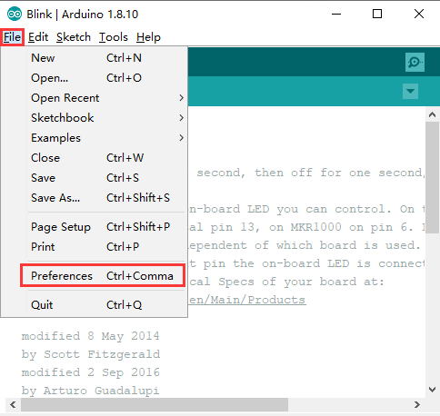
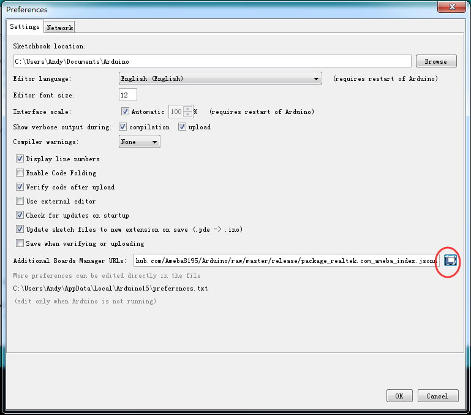
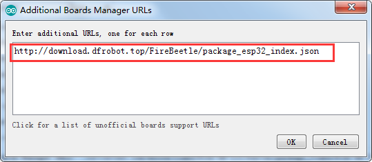
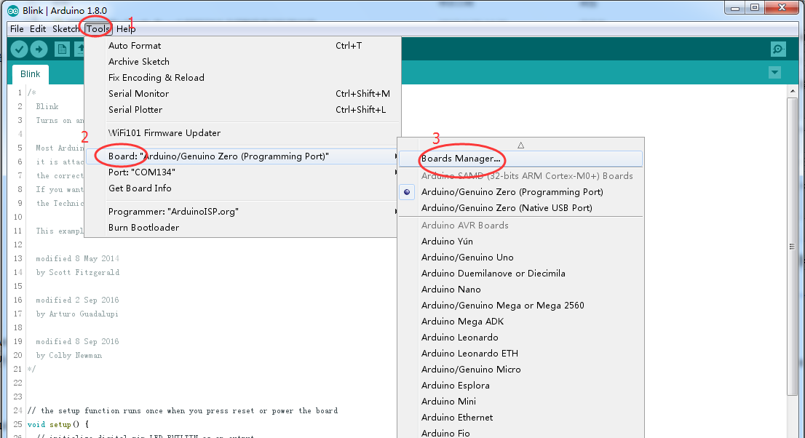
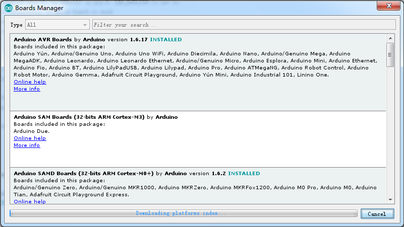
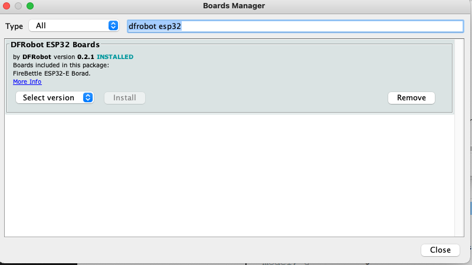
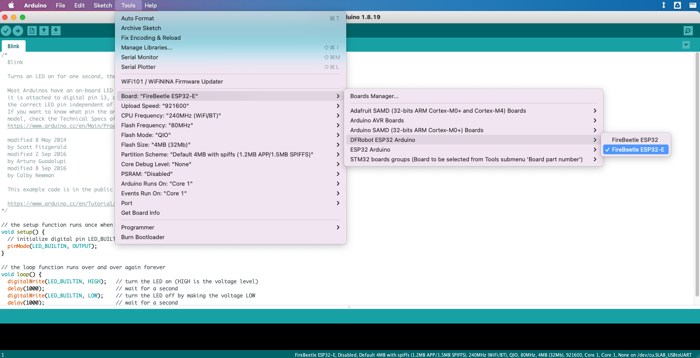

How to connect the Firebeetle 2 MCU
In our class we will be using the FireBeetle 2 ESP32-E IoT Microcontroller as our main MCU. In this guid you will learn how to install needed software on your computer.
Full documentation of this MCU can be found on the product wiki by DFRobot. For a quick pinout reference, take a look at this page.
Follow these simple steps to install FireBeetle 2 MCU on the Arduino IDE on your computer:
- Add the json link in IDE
- Download the core of the maincontroller
- Select development board and serial port
1. Add URL to Ardudino IDE
Open Arduino IDE, click File->Preferences, as shown below:

Click the icon marked with red below.

Copy the address to the newly popped up box: http://download.dfrobot.top/FireBeetle/package_DFRobot_index.json

Click OK.
2. Update board.
Open Tools->Board->Boards Manager.

The board manager will be automatically updated.

Wait for a while, then type in the search bar DFRobot ESP32 in the list. Click “Install” (in the image its gayed out because it’s already installed…):

Once you see “INSTALLED” in Blue you are Done! You can find the installed FireBeetle-ESP32 board in the list now.
3. Select board and port
Once the board is installed, select it: Open Tools->Board->DFRobot ESP32 Arduino->FireBeelte ESP32-E 
Then select the Port
Open Tools->Port->COMxx (for windows the port wil be COM with some number, for Mac/linux it will be /dev/cu. and then something).
How do you know what port to choose?
Check the ports without the MCU pluged into the computer. Then plug the MCU and check the ports again. If you see a new port, thats the port of the MCU.
Troubleshooting
Troubleshooting if there is no port for the MCU:
- Missing driver. Could be you need to install a specific driver.
Windows driver
MacOS driver - Bad USB cable. Some cables are bad and some are only for charging and cannot sync data. Try using a different USB cable that worked for a freind.